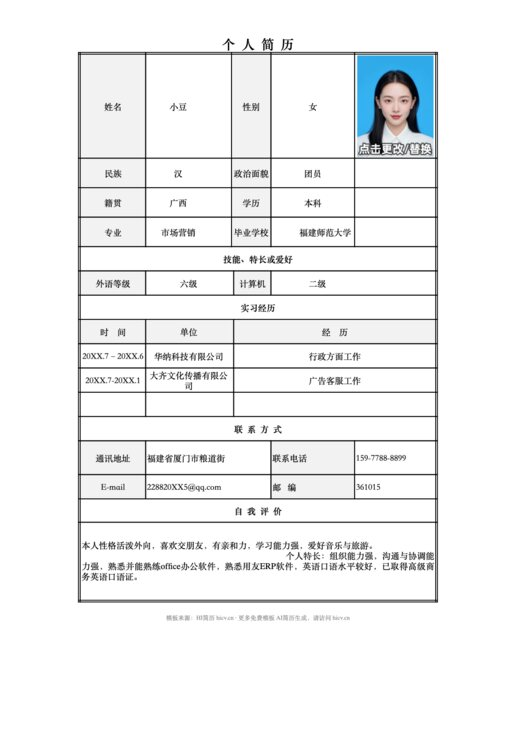
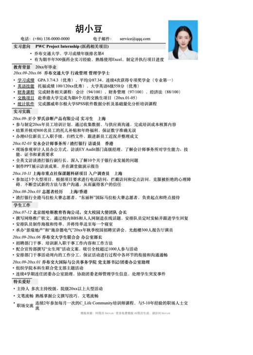
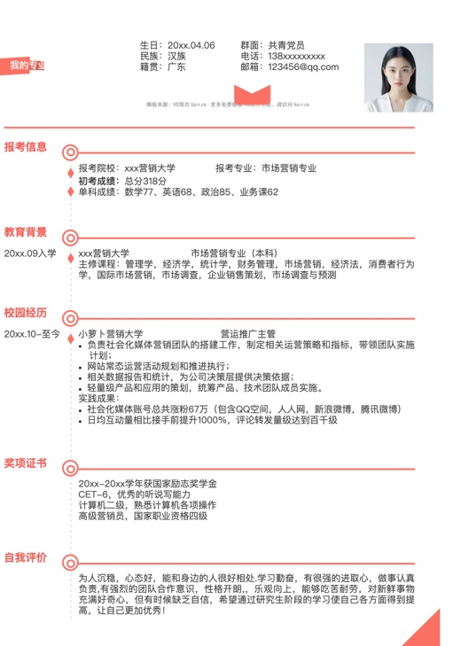

想快点完成简历？先试试 HICV 在线模板
先根据投递格式和编辑习惯，选择更适合自己的方式。
HICV 在线模板
适合希望快速选版式、在线完善内容并导出投递文件的用户。
- 换风格更方便：百变模板可组合头部、模块样式、配色与背景。
- 内容与版式一起处理：在线编辑，可结合 AI 帮写整理表达，再自行核对事实。
- 适合 PDF 投递：选择在线模板后导出，导出结果仍需逐页检查。
- 需要考虑：依赖网络，保存与使用相关功能可能需要登录；高级模板和部分 AI 功能有会员或额度限制。
下载 Word / WPS 模板
适合要求提交 DOCX、需要离线编辑或熟悉 Word 排版的用户。
- 离线可改：文件下载后，可在本地 Word 或 WPS 中编辑和保存。
- 细节自由：可以自行调整表格、段落和页面布局，适应指定材料格式。
- 仓库文件免费：使用与转发时请保留来源并遵守授权说明。
- 需要考虑：替换长文本、跨设备打开或换模板时，可能需要手动处理字体、分页和对齐；内容整理与版本维护也需自行完成。
本仓库 DOCX 与 HICV 在线模板是两种资源，并非每份文件都有对应的在线版。需要提交 DOCX 时请优先选择 Word 文件；招聘方指定格式时以其要求为准。在线功能与费用以 官网权益及账户内提示 为准。
精选模板预览
全部由仓库中的真实 DOCX 直接渲染，保持原始版式比例，不使用示意图。






简历写作与投递指南
从真实经历到可投递的文件，把下载模板后的几步也准备好。
秋招简历与投递检查
面向 2026 年秋季准备求职的 2027 届毕业生，从岗位要求、经历排序到文件命名，附可编辑 Word 模板与逐项检查清单。
阅读全文 →无实习经历的简历写法
没有正式实习，也能用真实课程项目、个人作品与校园实践展示能力。附经历改写框架、模块取舍建议和应届生 Word 模板入口。
阅读全文 →Word 排版与 PDF 检查
下载 Word 简历后，检查示例内容、表格与分页、页眉页脚、文字复制和导出结果。附投递格式选择与常见排版问题处理建议。
阅读全文 →